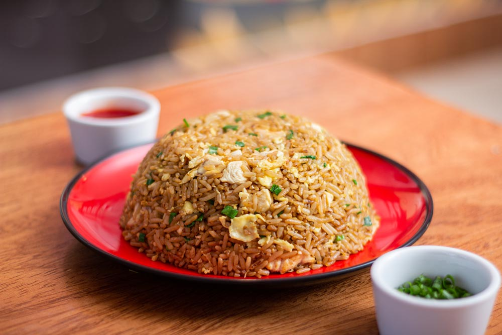

Chaufa Rice

Description
Chaufa Rice is one of the most popular Peruvian plates mainly because of it's simplicity.
Personally, this is one of my go-to meals in College as it is quick and delicious. The leftovers are usually even more tasty!
Ingredients
- Rice
- Green Onion
- Chicken
- Eggs
- Soy Sauce
Steps
- Cook rice in your preferred way and reserve
- Cook chicken in small cubes and reserve
- Add 3 eggs to a pan and mix
- Add the rice, soy sauce, and mix
- Add the chicken and chopped green onions
- Mix and serve, reserve any leftovers
Return to homepage